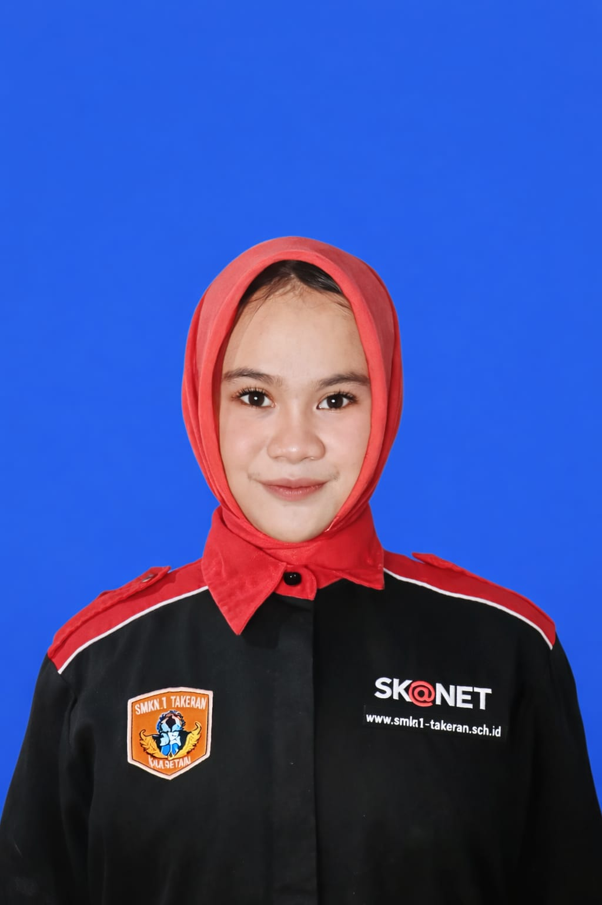

Siswi RPL — SMKN 1 Takeran
Saya siswi XII SMKN Takeran, jurusan Rekayasa Perangkat Lunak, Punya semangat untuk terus belajar, berkembang dan mencoba berbagai pengalaman baru.
Kunjungi Toko Rajut
Saya pribadi yang sabar dan berusaha tidak enakan ke orang lain — lebih suka mendengar dulu sebelum bicara, dan menyelesaikan sesuatu pelan-pelan asal benar.
Di luar jam sekolah, dapur jadi tempat favorit saya. Memasak mengajarkan saya bahwa proses yang tenang biasanya menghasilkan sesuatu yang lebih enak — hal yang sama saya bawa ke belajar RPL.
Cita-cita saya sederhana: sukses, dengan cara saya sendiri, lewat proses yang saya jalani penuh kesabaran.
Melalui kegiatan Praktik Kerja Lapangan, saya mendapatkan pengalaman secara langsung mengenai lingkungan kerja dan belajar menjalankan tugas dengan disiplin, teliti, serta bertanggung jawab.
Selama masa MTs, saya aktif mengikuti kegiatan Pramuka. Pengalaman ini mengajarkan saya tentang kedisiplinan, kemandirian, kerja sama tim, dan tanggung jawab. Saya rutin mengikuti latihan dan berbagai kegiatan kepramukaan yang diadakan baik di madrasah maupun di luar.
Silakan hubungi saya lewat kontak di samping.